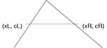

| Autor: | Wojciech Muła |
|---|---|
| Dodany: | 31.07.2002 |
| Aktualizacja: | 9.08.2002 |
Każdy z wierzchołków charakteryzują następujące parametry:
Zanim trójkąt zostanie wyświetlony jest on dzielony na dwie części, w taki sposób jak na obok (odcinek pomiędzy V2 i V2' jest najdłuższym scanlinem w całym trójkącie). Wypełnienie trójkątów V1, V2, V2' oraz V2, V2', V3 jest bardzo proste.
Obliczenie współrzędnych xL i xR oraz kolorów cL, cR wymaga wyłącznie dodawania przyrostów dXdY i dcdY (dXdY = dX/dY, dcdY = dc/dY).
xL = ydXdYL xR = ydXdYR
cL = ydcdYL cR = ydcdYR
Dla każdej linii należy policzyć przyrost dcdX.
dcdX = (cR − cL)/(xR − xL)
Po uproszczeniu powyższego równania zmienna y zostanie wyrugowana — współczynnik dcdX jest stały dla całego trójkąta (dla obu połówek!).
float dcdX;
void fill_scanline(int xl, int xr, int y, float cl) {
while (xl <= xr) {
putpixel(xl++, y, int(cl));
cl += dcdX;
}
}
Ponieważ wartości składowych kolorów są z przedziału 0..255, oraz w każdy niezdegnerowanym trójkącie V2'.x − V2.x > 0 to |dcdX| ≤ 255. Można zatem wartość dcdX zapisać w formacie fixed-point 8:8 i przy użyciu rozkazów MMX obliczać jednocześnie kolory czterech sąsiednich pikseli. Poniżej fragment kodu dla obrazów grayscale.
segment .text
; edi - adres xl
; ecx - szerokość scanlina w pixelach
; mm6 = | cl*4 | cl*3 | cl*2 | cl*1 | -- liczby fixed-point 8:8
; mm7 = |dcdX*4|dcdX*3|dcdX*2|dcdX*1| -- liczby fixed-point 8:8
fill_scanline_mmx:
push ecx
movq mm0, mm6 ; kopia robocza kolorów
shr ecx, 8 ; liczba 8-bajtowych bloków
jz .skip1
.loop1:
movq mm1, mm0
psrlw mm1, 8 ; podziel przez 8
packuswb mm1, mm1 ; spakuj
movd [edi], mm1
add edi , byte 8
paddw mm0, mm7 ; uaktualnij kolory
loop .loop1
.skip1:
pop ecx
and ecx, 0x7
jz .skip2
movq mm1, [ecx-8+mask] ; załaduj maskę
maskmovq mm0, mm1 ; (mm1[i] & 0x80) ? [ds:edi] = mm0[i], i=0..7
.skip2:
ret
segment .data
mask:
db 0xff, 0x00, 0x00, 0x00, 0x00, 0x00, 0x00, 0x00 ; 1
db 0xff, 0xff, 0x00, 0x00, 0x00, 0x00, 0x00, 0x00 ; 2
db 0xff, 0xff, 0xff, 0x00, 0x00, 0x00, 0x00, 0x00 ; 3
db 0xff, 0xff, 0xff, 0xff, 0x00, 0x00, 0x00, 0x00 ; 4
db 0xff, 0xff, 0xff, 0xff, 0xff, 0x00, 0x00, 0x00 ; 5
db 0xff, 0xff, 0xff, 0xff, 0xff, 0xff, 0x00, 0x00 ; 6
db 0xff, 0xff, 0xff, 0xff, 0xff, 0xff, 0xff, 0x00 ; 7
Wartość rejestru mm7 jest ustalana na początku procedury wypełniającej trójkąt, z kolei zawartość rejestru mm6 jest obliczana w każdej pętli:
// wartości ustalane na początku pętli:
// mm5 = |4*dcdY_{L}|4*dcdY_{L}|4*dcdY_{L}|4*dcdY_{L}|
// mm6 = | 4*c_{L} | 3*c_{L} | 2*c_{L} | 1*c_{L} |
for (y=V1.y; y < V2.y; y++)
{
asm {
; parametry
call fill_scanline_mmx
paddw mm6, mm5
}
}
Przy dużych wartościach współczynnika dcdX jego wartość pomnożona przez 2, 3 i 4 nie mieści się w zakresie fixed-point 8:8. Jednakże tak duże wartości występują przy wąskich trójkątach, tj. gdy V'2X − V2X < 4, oraz gdy abs(V'2C − V2C) = 255. Wtedy pola na których występuje przekorczenie zakresu i tak nie są wyświetlane.